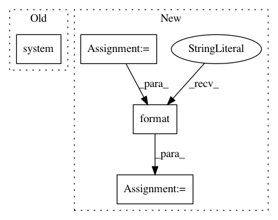

fdeeaff5e452e257bf3a3dd76e25c81304cc4c98,mmdnn/conversion/examples/tensorflow/vis_meta.py,,_main,#,14
Before Change
raise ValueError("Usage: python vis_meta.py /path/to/model.meta /path/to/log/directory")
// load file
visualize(sys.argv[1], sys.argv[2])
os.system("tensorboard --logdir=" + sys.argv[2])
if __name__ == "__main__":
_main()
After Change
visualize(args.ckpt, args.logdir)
// Run TensorBoard
cmd = "tensorboard --logdir={} {}".format(
args.logdir,
" ".join(unknown_args)
)
//print(cmd)
os.system(cmd)
In pattern: SUPERPATTERN
Frequency: 3
Non-data size: 4
Instances
Project Name: Microsoft/MMdnn
Commit Name: fdeeaff5e452e257bf3a3dd76e25c81304cc4c98
Time: 2020-03-15
Author: linmajia@users.noreply.github.com
File Name: mmdnn/conversion/examples/tensorflow/vis_meta.py
Class Name:
Method Name: _main
Project Name: rflamary/POT
Commit Name: e23f4d0646a3e8d28cc146c28574359585295249
Time: 2020-02-28
Author: ncourty@irisa.fr
File Name: setup.py
Class Name:
Method Name:
Project Name: avinashpaliwal/Super-SloMo
Commit Name: f7a8a023870f3218c02c6f5940b258b49ebeb507
Time: 2020-08-20
Author: 42113029+tamasino52@users.noreply.github.com
File Name: video_to_slomo.py
Class Name:
Method Name: extract_frames